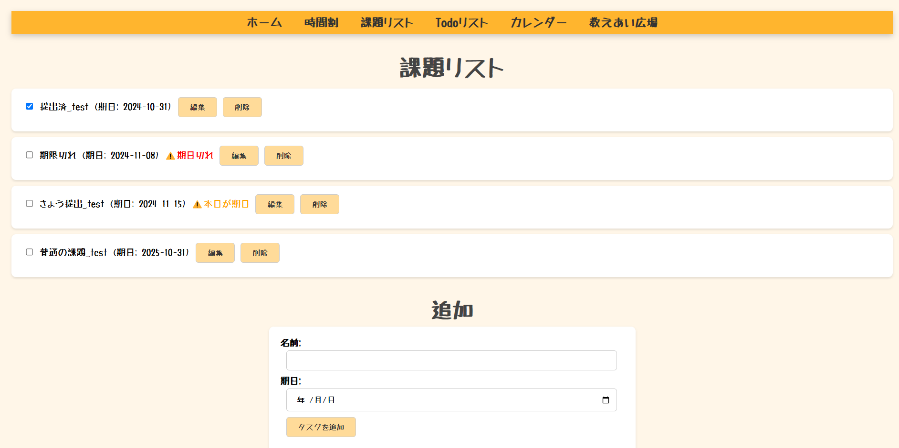
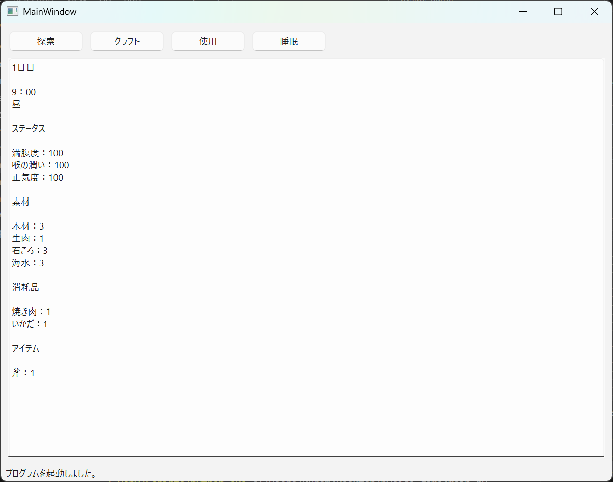
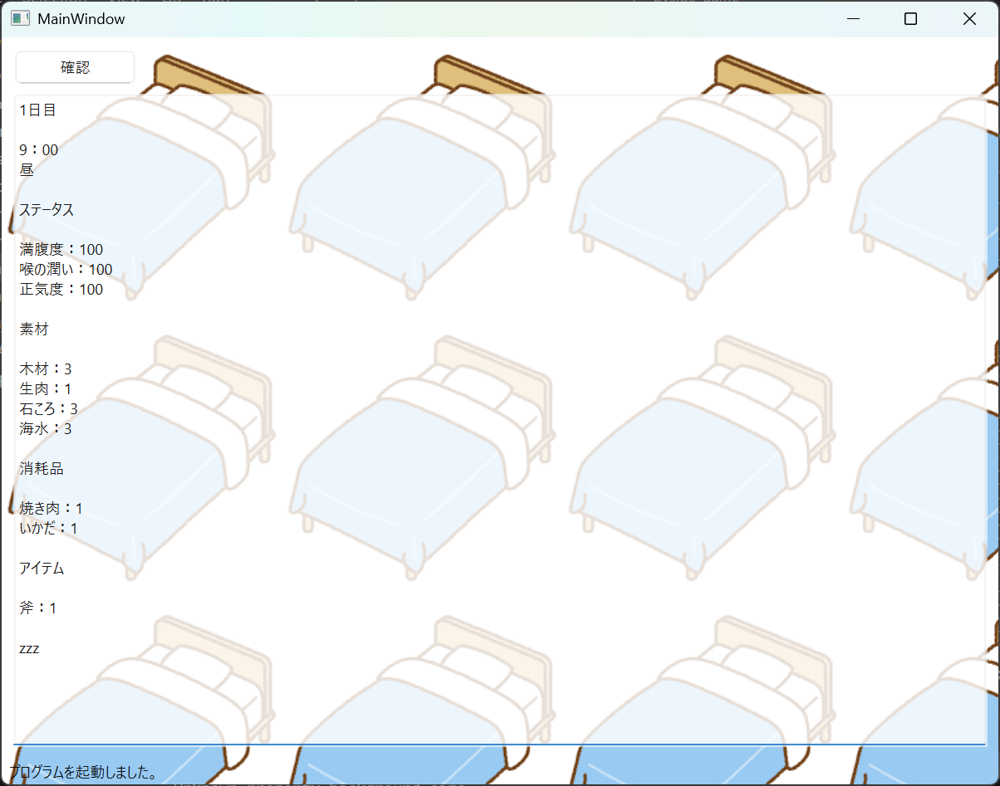
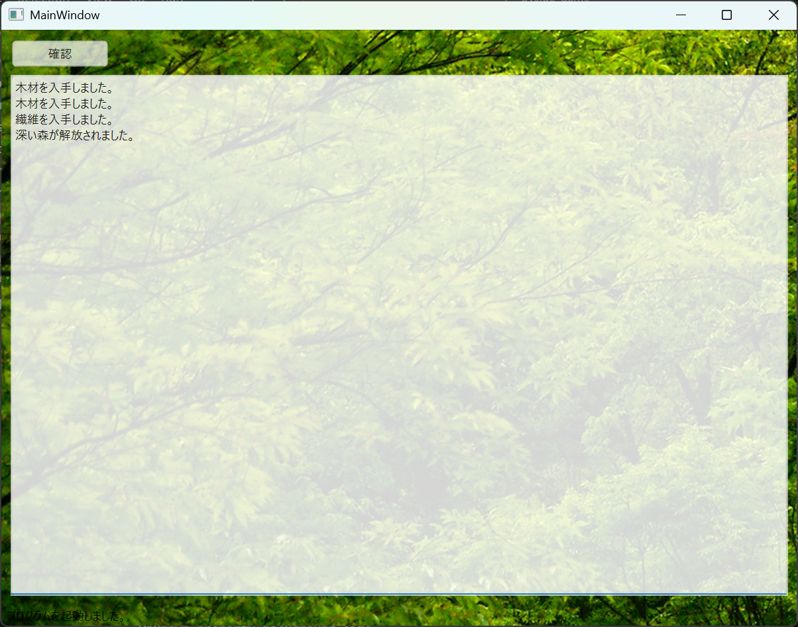
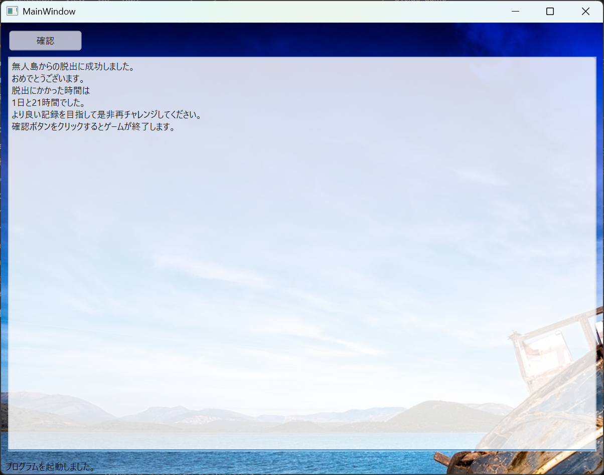

Portfolio
プロフィール
所属
- 大阪公立大学工業高等専門学校 総合工学システム学科 知能情報コース 2年生
- 現代音楽部
- フォークギター部
得意な言語
- Python
趣味
- ギター
- 西洋史
- twich,youtube
- ゲーム(ローグライク,シミュレーション)
- 読書
製作物
本ポートフォリオ
- 二年次後期の自由課題として制作。
- HTML/CSSで制作
- Githubはこちら
オートバトル制のRPG風ローグライク

学習支援ツール
- 総合課題実習においてチームで制作を行い、高専祭で展示した。
- 制作中
- JavaScript, HTML/CSSで制作
- リンクはこちら

SurviverGame
- 2024年12月~1月に制作
- Python(pygame)で制作
- 制作時間約60〜70時間
- Githubはこちら
概要
- VampireSurvivorsを参考にしたローグライトアクションゲーム。敵を倒してレベルアップすることで、ランダムに選ばれたスキルや武器を選択し、キャラクターを強化していく。従来のSurvivorsゲームと異なる点として、目的地を設定した点が挙げられる。従来のSurvivorsゲームは〜分間生き残るというスタイルがメジャーである。その中でも、アイテム入手のために特定の場所に向かうという場面がある場合があり、その時、敵を避けながら目的地へ向かうのは難易度が高く、別の面白さがあると感じ、このようなゲームデザインとした。具体的には、マップの上方向へ向かっていき、450m地点到達を目指し、タイムを競うというスタイルである。
操作方法
- wasdで移動 レベルアップ時のスキルはadで選択し、Enterで確定 いたってシンプル
工夫
- ゲームの工夫 敵キャラクターや武器のグラフィックをフリー素材等を用いて描画することで、ゲーム体験に非常に大きく影響するグラフィック面を向上させた。 また、敵同士が互いを避けるようにすることで、敵同士めり込んでしまうのを防いだり、UIを見やすくし、スキルの説明などが誰でも分かりやすいようにすることで、ゲーム未経験者でも遊びやすいようにした。
- 技術的な工夫 基本的にコードを全てオブジェクト指向で書くことで、拡張性や汎用性を高くし、快適にゲーム開発ができるようにし、 今後の改良もしやすくした。 スキルの名前、効果、説明等を辞書型で書き、同じく拡張性、汎用性を高めた。
感想・反省
- 前から作りたかったVampireSurvivors風ゲームをそこそこ形にすることが出来てある程度満足の出来になった。 ただ、本来実装したかった目的地があるからこそ活きる要素として経過時間と対応したギミック(ボスのHPが時間と対応する等)を制作時間の関係で断念したことや、スキル選択時のアイコンが無かったり、ゲームクリア・ゲームオーバー等様々な部分が未完成のままになってしまったことは心残り。また、事前に計画を立てることなく1機能づつ実装したため、機能同士の連携が非常に難しかった。それを踏まえて今後の制作では、事前に実装する機能、クラス、どのような連携を行うかを計画するようにしたい。
GUISurvivalGame




- 2025年2月に制作
- Python(pyside)で制作
- 制作時間12時間
- Githubはこちら
概要
- GUIライブラリ(pyside6)を用いて制作したゲーム。マウスのみで操作を行うことが可能ないわゆるクリックゲーに当たる。ゲームの目的としてはプレイヤーは無人島に遭難してしまっていて、そこからの脱出が目的。 島の探索や道具の制作を行い、いかだを作って無人島から脱出するゲーム。ゲームの進行はテキストベースで進む。
操作方法
- 前述のとおり、マウスのみで操作を行うことが可能。画面上のボタンをクリックすることでプレイヤーの行動を決めていく。 プレイヤーが取れる行動は4種類で、探索、クラフト、アイテム使用、睡眠がある。 探索を行うことで様々な素材を獲得し、獲得した素材から新しいアイテムをクラフトしてできることを増やしていく。アイテム使用はアイテムを使用することでプレイヤーの状態を回復させることができる。睡眠はプレイヤーの状態を回復させることができるが、時間が経過するため、適切なタイミングで行う必要がある。 プレイヤーには三つのステータスがあり、空腹度、喉の潤い、正気度がある。どれかが０になったらゲームオーバー。これらは探索によって減少していく。 これらのステータスの様子を見つつ、いかに早く脱出するかを目標とするゲーム。
工夫
- ゲームの工夫 テキストベースのゲームであるため、画面の動きなどがなく飽きてしまうのを防ぐため、探索や睡眠時に背景を変更するようにした。 また、すべての行動で時間が経過するようにし、いかに無駄をなくすのかの戦略性を高くした。
- 技術的な工夫 アイテムやマップのデータの管理に辞書型や二次配列を効率的に活用し、プログラムの拡張がしやすいようにした。
感想・反省
- これまで、プレイヤーがアイテムなどを保有しておくようなシステムのゲームを作る経験がなかったため、今回の製作はアイテムデータの取り扱い方の良い勉強になった。今回のデータの構造をベースに、今後に直接生かしていける知識が身についたと思う。 反省としては、見た目の質素さが目立つこと。今回はテキストベースのゲームであるため、見た目が非常に質素である。これを解消するためには、画像を用いたが、かなり不完全な改善だった。具体的にはマップを用意し、UIをマップと連動させたり、アイテムごとに画像を用意するなどが出来たと思う。
スキル
自主的に学習した
- Python
- JavaScript
- HTML/CSS
授業で学習した
- Scratch
- Deeds-DCS
- MakeCode for micro:bit
- Arduino
- ArduinoIDE
- Tinkercad
- C++
学習したい
- Unreal Engine5
- Unity
- GameMaker
- 歴史能力検定(世界史)
- TOEIC
コンタクト
- メールアドレス : kuroma.un96@gmail.com
- github : https://github.com/kuroma514